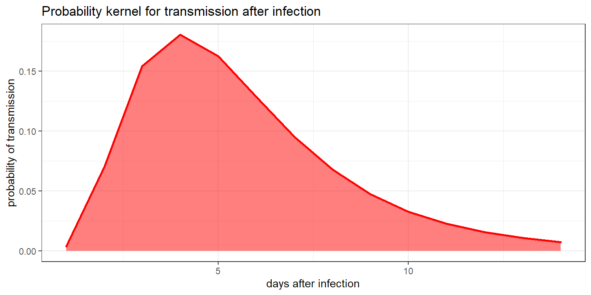
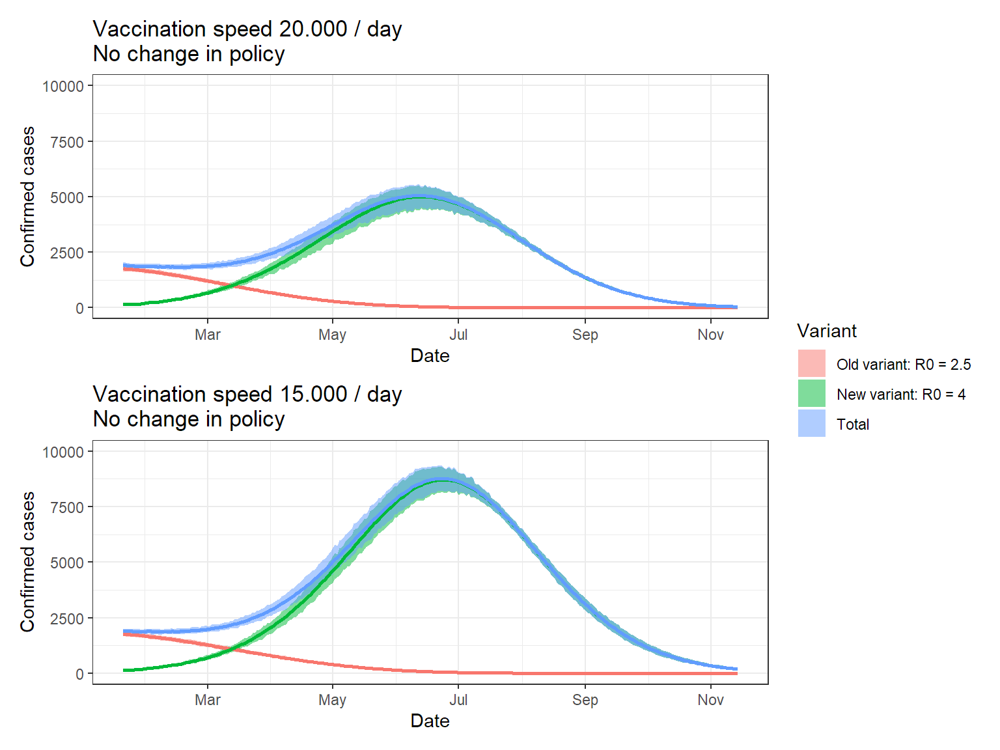

There’s much to do about the new variants that get picked up everywhere. I applied the previous insights in the stochastic mechanisms behind the pandemic to model how a more transmissible variant would inflence cases in Belgium. This document explains how.
Using a negative binomial distribution can account for the observed overdispersion in the number of infections. The initial work of Blumberg et al (2014) described how the number of cases generated by \(s\) original cases, could be described by a negative binomial distribution with a mean of \(Rs\) and a dispersion parameter of \(ks\). Here \(R\) is the effective reproductive number \(R_{eff}\).
In a paper by Endo et al, \(k\) was estimated at about \(0.1\) for a consensus \(R_0\) of \(2.5\). I use their estimates as a guidance throughout this simulation.
Based on UK data, Leung et al estimated the UK variant to be 70-80% more infective. I chose to go with 70%, translating to a \(R_0\) value of 4.25.
To move from \(R_0\) to the effective reproduction rate, I chose to model infection as a binomial process. The key parameter \(p\) then gives a probability that a theoretical infection really leads to an infection. So a value \(p = 0.6\) means that the measures taken in the population at large, prevent 40% of the infections that would occur if no action was taken. The size parameter of the binomial distribution can then be taken as distributed following the negative binomial I described earlier.
Based on \(R_0\), \(R_{eff}\) and the proportion of immune people, one can calculate the parameter for the binomial distribution as:
\[ p = \frac{R_{eff}}{R_0 (1 - p_{immune})} \]
function(r,reff,immune){
reff / (r * (1 - immune))
}## function(r,reff,immune){
## reff / (r * (1 - immune))
## }According to a meta-analysis by McAloon et al, the probability of transmission x days after infection can be modelled by a log-normal distribution with a mean of 1.63 and a standard deviation of 0.5. This allows for creation of a kernel that gives an proxy for the probability of transmission at a given day.
inc_kernel <- dlnorm(seq(1,14), mean = 1.63, sd = 0.5)
# Normalization to sum to 1:
inc_kernel <- inc_kernel / sum(inc_kernel)The probabilities used are given in the following graph:
ggplot(data.frame(x=1:14,y=inc_kernel),
aes(x,y)) +
geom_area(col = "red",
fill = alpha("red", 0.5),lwd = 1) +
theme_bw() +
labs(x = "days after infection",
y = "probability of transmission",
title = "Probability kernel for transmission after infection")
Actually, it’s not the standard SEIR model at all. I use the same reasoning though. I start by taking the number of cases of the previous 2 weeks. For each day, a negative binomial gives a certain number of theoretical infections. These are multiplied with the kernel probabilities and summed to end up with the theoretical new infections on that day.
These theoretical infections are then corrected:
This random prediction is done for each day. The number of infections is added to the immune cohort, the window shifts one day, and a new prediction is made. In this way, I simulate what could happen over the coming period.
To simulate what would happen when a new, more transmissable variant enters Belgium, the entire procedure is done for both variants. I make a set of assumptions in this (naive) simulation:
The assumptions are big and rough, and that’s because it’s sunday and I don’t have the time to finetune them. The functions for this simulation are on github.
# This loads all the functions used for the simulations here.
source("https://raw.githubusercontent.com/JoFAM/covidBE_analysis/master/functions/simulate_variants.R")I chose to run 1000 simulations, using the kernel and the assumptions given above. Keep in mind that the band indicate the variation in the simulation, NOT the uncertainty. We assume all parameters fixed here!
set.seed(123)
# Simulation
res <- replicate_series(n = 1000,
t = 300,
prev = seq(3850, 3750, length.out = 14),
kernel = inc_kernel,
tot_pop = 11e6,
vacc = 100000,
vacc_speed = 20000,
immune = 3000000,
p_binom = 0.54) %>%
mutate(across(c(ll, ul, median),
function(x) x/2)) %>%
mutate(t = Sys.Date() + t,
var = factor(var,
levels = c("v1","v2","tot"),
labels = c("Old variant: R0 = 2.5",
"New variant: R0 = 4",
"Total")))
# Simulation vaccination speed lower
res2 <- replicate_series(n = 1000,
t = 300,
prev = seq(3850, 3750, length.out = 14),
kernel = inc_kernel,
tot_pop = 11e6,
vacc = 100000,
vacc_speed = 15000,
immune = 3000000,
p_binom = 0.54,
prop_newvar = 0.05) %>%
mutate(across(c(ll, ul, median),
function(x) x/2)) %>%
mutate(t = Sys.Date() + t,
var = factor(var,
levels = c("v1","v2","tot"),
labels = c("Old variant: R0 = 2.5",
"New variant: R0 = 4",
"Total")))# Gather data
p1 <- ggplot(res, aes(x = t, fill = var)) +
geom_ribbon(aes(ymin = ll, ymax = ul),
alpha = 0.5) +
geom_line(aes(y = median, color = var), lwd = 1,
show.legend = FALSE) +
labs(x = "Date",
y = "Confirmed cases",
fill = "Variant") +
theme_bw() +
ggtitle("Vaccination speed 20.000 / day \nNo change in policy") +
scale_x_date(date_breaks = "2 month",
date_labels = "%b") +
scale_y_continuous(limits = c(0,10000))
# Gather data
p2 <- ggplot(res2, aes(x = t, fill = var)) +
geom_ribbon(aes(ymin = ll, ymax = ul),
alpha = 0.5) +
geom_line(aes(y = median, color = var), lwd = 1,
show.legend = FALSE) +
labs(x = "Date",
y = "Confirmed cases",
fill = "Variant") +
theme_bw() +
ggtitle("Vaccination speed 15.000 / day \nNo change in policy") +
scale_x_date(date_breaks = "2 month",
date_labels = "%b") +
scale_y_continuous(limits = c(0,10000))
p1 / p2 + plot_layout(guides = "collect")